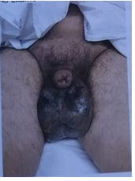
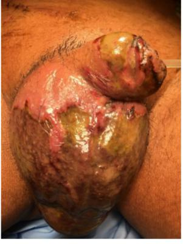
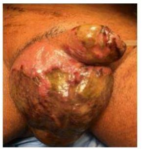
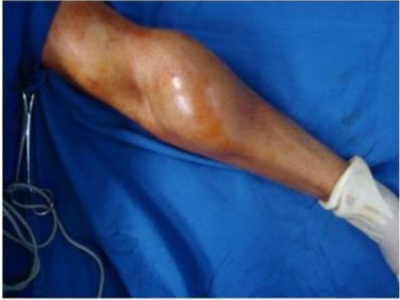
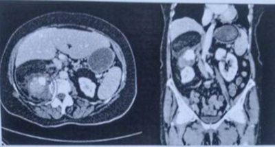
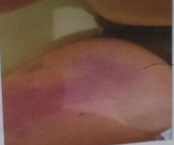
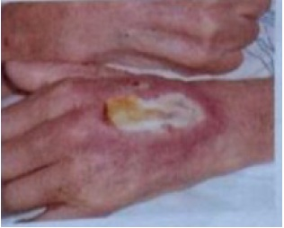
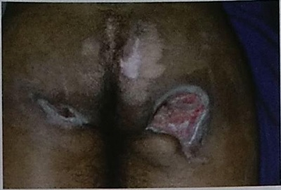

Questão 1 · Classif icação de Retalhos · Cirurgia · 4000145883Quanto aos retalhos de pele, assinale a alternativa correta.
A Os de pedículo ao acaso são mais viáveis que os axiais.
B Os axiais apresentam inervação melhor que os de pedículo ao acaso.
C Os axiais sofrem mais retração.
D Os de pedículo ao acaso apresentam circulação pelo plexo subdérmico.
E Os retalhos de vizinhança são os mais viáveis.
Questão 2 · Materiais e Técnicas de Sutura · Cirurgia · 4000145745Dos fios abaixo, qual é considerado um fio absorvível?
A Vicryl.
B Mersilene.
C Prolene.
D Gore-tex.
E Nylon.
Questão 3 · Tipos de Sutura e Suas Principais Características · Cirurgia · 4000145480Sobre a técnica ilustrada na figura abaixo, de sutura com pontos separados, para tratamento de ferida corto-contusa, é CORRETO afirmar:

A É o ponto de escolha para suturas na região da face
B É uma boa escolha para quando há tensão nas bordas da ferida
C Não promove boa hemostasia
D Tende a provocar invaginação das bordas da ferida
Questão 4 · Materiais e Técnicas de Sutura · Cirurgia · 4000143171Qual o fio de sutura que se enquadra na classificação a seguir: monofilamentar, inabsorvível, sintético?
A Poliglecaprone.
B Poliglactina.
C Polipropileno.
D Polidioxanona.
E Catgut.
Questão 5 · Cirurgia · Cura por Segunda Intenção e Fechamento Primário · 4000142766Paciente vítima de ferimento por projétil de arma de fogo em abdômen, com perfuração intestinal e sepse, permaneceu internado em uma unidade de terapia intensiva durante semanas, com peritoneostomia e inúmeras outras complicações infecciosas. Após resolução do quadro inicial, retornou ao centro cirúrgico para fechamento com sutura de ferida abdominal. Como classificamos esse tipo de fechamento?
A Terciário.
B Primário.
C Secundário.
D Quaternário.
E Precoce.
Questão 6 · Princípios Básicos do Tratamento de Lesões Cortocontusas · Cirurgia · 4000141888Paciente, sexo masculino, 27 anos de idade, é trazido por populares à Unidade de Pronto Atendimento, UPA, após ser vítima de agressão física. Relata que sofreu agressão com um soco na boca, há cerca de 45 minutos, após discussão em um bar. Refere ferimento em lábio inferior com dor e sangramento. Nega outros sintomas. Ao exame físico, bom estado geral, lúcido e orientado, presença de ferimento corto-contuso em região central do lábio inferior, medindo 3cm de espessura total (exposição de mucosa), sem perda de substância e com sangramento ativo em pequena quantidade. Indique o tipo de fio mais adequado para ser utilizado no reparo da lesão da mucosa.
A Poligalactina.
B Poliamida.
C Poliéster.
D Polidioxanona.
Questão 7 · Princípios Básicos do Tratamento de Lesões Cortocontusas · Cirurgia · 4000141887Paciente, sexo masculino, 27 anos de idade, é trazido por populares à Unidade de Pronto Atendimento, UPA, após ser vítima de agressão física. Relata que sofreu agressão com um soco na boca, há cerca de 45 minutos, após discussão em um bar. Refere ferimento em lábio inferior com dor e sangramento. Nega outros sintomas. Ao exame físico, bom estado geral, lúcido e orientado, presença de ferimento corto-contuso em região central do lábio inferior, medindo 3cm de espessura total (exposição de mucosa), sem perda de substância e com sangramento ativo em pequena quantidade. Identifique o número mínimo de planos anatômicos que devem ser fechados no reparo do ferimento desse paciente.
A 1
B 2
C 3
D 4
Questão 8 · Princípios Básicos do Tratamento de Lesões Cortocontusas · Cirurgia · 4000141886Paciente, sexo masculino, 27 anos de idade, é trazido por populares à Unidade de Pronto Atendimento, UPA, após ser vítima de agressão física. Relata que sofreu agressão com um soco na boca, há cerca de 45 minutos, após discussão em um bar. Refere ferimento em lábio inferior com dor e sangramento. Nega outros sintomas. Ao exame físico, bom estado geral, lúcido e orientado, presença de ferimento corto-contuso em região central do lábio inferior, medindo 3cm de espessura total (exposição de mucosa), sem perda de substância e com sangramento ativo em pequena quantidade. Indique a estrutura anatômica mais importante que deve ser reparada para que o paciente não evolua com sequela funcional na região oral.
A Músculo bucinador.
B Mucosa oral.
C Pele do lábio inferior.
D Músculo orbicular da boca.
Questão 9 · Princípios Básicos do Tratamento de Lesões Cortocontusas · Cirurgia · 4000140668As feridas de origem traumática da face são uma das ocorrências cirúrgicas mais frequentes nos prontos-socorros, e os princípios básicos do seu tratamento devem ser conhecidos para se obterem os melhores resultados funcional e estético, com a prevenção de complicações precoces e sequelas tardias no pós-operatório. Assim, no que diz respeito a ferimentos na face,
A uma alternativa às suturas pode ser o uso de colas teciduais em ferimentos lineares e sem contaminação, especialmente em crianças.
B a sutura é contraindicada, devendo ser deixados cicatrizar por segunda intenção, em ferimentos contaminados, como as mordeduras de animais.
C o uso profilático de antibióticos é mandatório para evitar infecção nos ferimentos corto-contusos.
D deve-se realizar amplo debridamento das bordas da feridas antes que se possa proceder à sutura.
Questão 10 · Classif icação dos Enxertos de Pele Quanto ao Doador · Cirurgia · 4000139771Assinale a alternativa que apresenta as características fundamentais da classificação de aloenxerto cutâneo.
A As áreas doadora e receptora do enxerto se encontram em um mesmo indivíduo.
B O organismo receptor é da mesma espécie e linhagem genética do organismo doador.
C O organismo receptor é de espécie diferente do organismo doador.
D O organismo receptor é da mesma espécie, mas de linhagem genética diferente do doador.
E O segmento de pele a ser transplantado não possui pedículo vascular.
Questão 11 · Lesões Por Pressão · Cirurgia · 4000131246Leia o caso clínico a seguir. Paciente de 35 anos, paraplégico, portador de úlcera por pressão isquiática esquerda profunda com 12 cm de diâmetro, não infectada. Nesse caso, a melhor opção terapêutica é:
A curativo com pomadas desbridantes.
B curativo a vácuo.
C enxerto de pele parcial.
D retalho miocutâneo.
Questão 12 · Classif icação dos Enxertos de Pele Quanto à Espessura · Cirurgia · 4000131244O enxerto de pele de espessura total é mais indicado em relação a um enxerto de pele de espessura parcial, em caso de feridas:
A contaminadas.
B de pequena extensão na face.
C em tecido irradiado previamente.
D extensas de queimaduras.
Questão 13 · Cirurgia · Diagnóstico e Princípios de Estadiamento · 4000129775Sobre os sarcomas de partes moles, assinale a alternativa correta.
A Tumores maiores que 3cm são classificados como T2.
B Tumores de baixo grau são os que mais se beneficiam do tratamento neoadjuvante.
C O grau histológico é um indicador da agressividade tumoral, tem importância prognóstica e também interfere no estadiamento da doença.
D O diagnóstico histológico é fortemente recomendável, devendo ser obtido preferencialmente através de biopsia incisional aberta, por permitir maior amostragem e melhor classificação do grau tumoral, além de já permitir avaliação da ressecabilidade.
E O grau tumoral é calculado baseado no escore que soma a pontuação em três características: diferenciação tumoral, contagem mitótica e valor do Ki-67 (índice que estima a proliferação celular).
Questão 14 · Fechamento da Lesão · Cirurgia · 4000128110Paciente do sexo feminino, 22 anos de idade, dá entrada na UPA do seu bairro, vítima de agressão física há uma hora. A paciente refere que, após discussão com a prima, recebeu um soco na boca e cursou um ferimento no lábio inferior com sangramento ativo. Nega comorbidades ou outros traumas. Refere dor no lábio inferior e sem outras queixas. Ao exame inicial: A: via aérea pérvia, nega dor cervical, SatO₂: 99%; B: Murmúrio vesicular bem distribuído sem ruídos adventícios, FR: 16ipm; C: Bulhas rítmicas e normofonéticas, FC: 80bpm, PA: 126x82mmHg; D: Escala de coma de Glasgow 15, pupilas isocóricas e fotorreagentes; E: ferimento corto-contuso medindo 4cm em lábio inferior do lado esquerdo, acometendo pele e mucosa oral, bordas irregulares, lesão da musculatura sem perda de substância e apresentando sangramento ativo e pequena quantidade. Dos tempos cirúrgicos, indique o mais relevante para se evitar sequela grave funcional relacionada ao tratamento do ferimento do lábio inferior.
A Síntese com reconstrução da musculatura oral.
B Síntese da mucosa oral.
C Síntese da pele.
D Hemostasia.
Questão 15 · Materiais e Técnicas de Sutura · Cirurgia · 4000128109Paciente do sexo feminino, 22 anos de idade, dá entrada na UPA do seu bairro, vítima de agressão física há uma hora. A paciente refere que, após discussão com a prima, recebeu um soco na boca e cursou um ferimento no lábio inferior com sangramento ativo. Nega comorbidades ou outros traumas. Refere dor no lábio inferior e sem outras queixas. Ao exame inicial: A: via aérea pérvia, nega dor cervical, SatO₂: 99%; B: Murmúrio vesicular bem distribuído sem ruídos adventícios, FR: 16ipm; C: Bulhas rítmicas e normofonéticas, FC: 80bpm, PA: 126x82mmHg; D: Escala de coma de Glasgow 15, pupilas isocóricas e fotorreagentes; E: ferimento corto-contuso medindo 4cm em lábio inferior do lado esquerdo, acometendo pele e mucosa oral, bordas irregulares, lesão da musculatura sem perda de substância e apresentando sangramento ativo e pequena quantidade. Visando evitar complicações em relação ao tratamento do lábio inferior, indique uma conduta não adequada para o momento.
A Lavagem do ferimento com SF0,9%.
B Desbridamento das bordas.
C Síntese com inversão das bordas.
D Retirada de corpo estranho do ferimento.
E Retirada de corpo estranho do ferimento.
Questão 16 · Cenário Atual e Princípios Básicos do ATLS · Fechamento da Lesão · Cirurgia · 4000128108Paciente do sexo feminino, 22 anos de idade, dá entrada na UPA do seu bairro, vítima de agressão física há uma hora. A paciente refere que, após discussão com a prima, recebeu um soco na boca e cursou um ferimento no lábio inferior com sangramento ativo. Nega comorbidades ou outros traumas. Refere dor no lábio inferior e sem outras queixas. Ao exame inicial: A: via aérea pérvia, nega dor cervical, SatO₂: 99%; B: Murmúrio vesicular bem distribuído sem ruídos adventícios, FR: 16ipm; C: Bulhas rítmicas e normofonéticas, FC: 80bpm, PA: 126x82mmHg; D: Escala de coma de Glasgow 15, pupilas isocóricas e fotorreagentes; E: ferimento corto-contuso medindo 4cm em lábio inferior do lado esquerdo, acometendo pele e mucosa oral, bordas irregulares, lesão da musculatura sem perda de substância e apresentando sangramento ativo e pequena quantidade. Considerando o quadro, após o atendimento inicial, indique a conduta mais adequada.
A Solicitar radiografia de tórax, pelve e cervical.
B Fazer hidratação com solução cristaloide.
C Fazer síntese do ferimento da boca com anestesia local.
D Observar por seis horas e fazer curativo no lábio.
Questão 17 · Processo de Integração do Enxerto de Pele · Cirurgia · 4000120194Assinale a alternativa que apresenta as fases de integração do enxerto em ordem cronológica de evolução.
A embebição, neovascularização e inosculação
B inosculação, embebição e neovascularização
C inosculação, neovascularização e embebição
D neovascularização, embebição e inosculação
E embebição, inosculação e neovascularização
Questão 18 · Retalhos · Tratamento cirúrgico · Cirurgia · 4000117075Paciente com neoplasia de mama, submetida a mastectomia total, e reconstrução com retalho de músculo de reto abdominal pediculado, que é baseado na artéria:
A Epigástrica inferior profunda.
B Epigástrica superior profunda.
C Toráxica lateral.
D Artéria mamária.
E Circunflexa profunda.
Questão 19 · Inf ecções Necrotizantes · Cirurgia · 4000112055Homem, 62 anos, diabético e hipertenso não controlado, sofreu trauma na região perineal (quando caiu sentado) há cerca de 5 dias. No dia seguinte, passou a apresentar abaulamento na região perianal, acompanhado de hiperemia e saída de secreção amarelada. Relata também que passou a apresentar edema da bolsa escrotal, descamação e enegrecimento em alguns pontos da pele há 3 dias, além de odor fétido no local. Há 2 dias está apresentando febre. Ao exame físico da bolsa escrotal observa-se os achados conforme figura. Qual a principal hipótese diagnóstica?

A Fratura peniana.
B Hematoma pós-trauma.
C Trombose venosa profunda de vasos pélvicos.
D Gangrena de Fournier.
Questão 20 · Terapia por Pressão Negativa · Processo de Integração do Enxerto de Pele · Debridamento · 4000111326Homem, 23 anos de idade, motociclista, foi vítima de colisão com automóvel. No Serviço de Emergência foi avaliado e liberado pela Cirurgia Geral e pela Ortopedia, sendo posteriormente encaminhado à cirurgia plástica que identi cou ferimento descolante de terço médio da perna direita, após descartada fratura. Qual é a melhor conduta, além da limpeza com soro fisiológico e degermação?
A Ressecção e desprezo dos tecidos descolados, curativo oclusivo simples ou de pressão negativa sobre o leito cruento.
B Ressecção e emagrecimento da pele descolada, enxertia da pele emagrecida sobre o leito cruento, curativo de pressão negativa sobre enxerto.
C Ressecção de toda pele descolada e rotação de retalho local da coxa.
D Ressecção de toda pele descolada, enxerto parcial de pele de coxa contralateral e curativo de pressão negativa sobre enxerto.
Questão 21 · Úlcera diabética · Debridamento · Classif icação do risco de ulceração e seguimento · 4000111289Mulher, 57 anos, hipertensa, diabética e portadora de varizes de membros inferiores. Notou surgimento de ferida em região de tornozelo esquerdo há 9 meses. A ferida aumentou progressivamente de tamanho, com presença de tecido desvitalizado no leito, muita exsudação e sem exposição óssea. Há 4 meses foi submetida a desbridamento e 3 ciclos de terapia por pressão negativa até obtenção de tecido de granulação exuberante, seguida de cobertura cutânea com enxerto de pele parcial. Houve integração adequada do enxerto e a ferida fechou por completo. Há 1 mês, paciente notou surgimento de nova ferida na mesma localização, que aumentou de tamanho e com perda de todo enxerto de pele. Não apresentava sinais de infecção local. Qual das causas melhor explica a recidiva da ferida?
A Localização da ferida no tornozelo.
B Cobertura cutânea da ferida inadequada para o local.
C Preparo inadequado do leito da ferida.
D Falta de controle das comorbidades causadoras da ferida.
Questão 22 · Enxertia Cutânea · Cirurgia · Tratamento Def initivo das Áreas Queimadas · 4000107259Um cirurgião plástico retirou um segmento de pele do abdômen para cobertura de região queimada em braço. Tecnicamente qual procedimento ele realizou?
A Enxerto.
B Zetaplastia.
C Retalho.
D Shaving.
Questão 23 · Inf ecções Necrotizantes · Cirurgia · 4000095851Paciente 66 a , submetido a transplante hepático por cirrose descompensada com meld 27. Apresentou sinais de hérnia inguinal encarcerada no 8° dia de pós operatório sendo submetido a cirurgia de urgência. Durante a exploração da região inguinal, observou-se hérnia de Richter mas sem sofrimento intestinal e por isso foi realizado a redução da hérnia e hernioplastia pela técnica de Lichtenstein. No décimo dia de pós operatório da hernioplastia, o paciente apresentou dor importante na região inguino-escrotal, associada a piora dos padrões infecciosos. De acordo com a imagem abaixo, qual o seu diagnóstico mais provável?

A Gangrena de Fournier
B Balanopostite supurativa necrotizante
C Orquiepididimite gangrenosa
D Abscesso isquio-retal
E Doença enxerto versus hospedeiro ( GVHD )
Questão 24 · Cirurgia · Diagnóstico e Princípios de Estadiamento · 4000076942Nos casos de sarcoma de partes moles, por ser precisa, econômica e segura, a biópsia preferida para o diagnóstico é:
A Punch incisional
B core central
C por agulha
D excisional
Questão 25 · Processo de Integração do Enxerto de Pele · Cirurgia · 4000064564Assinale a alternativa que contenha as fases de integração do enxerto em ordem cronológica de evolução.
A embebição, neovascularização e inosculação
B inosculação, embebição e neovascularização
C inosculação, neovascularização e embebição
D neovascularização, embebição e inosculação
E embebição, inosculação e neovascularização
Questão 26 · Enxertos de Espessura Total · Cirurgia · 4000063071Paciente, sexo masculino, 68 anos, apresenta lesão em pálpebra inferior direita há 3 meses com bordos elevados, fundo sujo, prurido e sangramento. O cirurgião opta por biópsia excisional da lesão por suas características serem sugestivas de lesão maligna. Durante a programação cirúrgica, discute com seus residentes as vantagens e desvantagens de um enxerto total de pele para reconstrução do local. São consideradas desvantagens, exceto:
A Menor contração durante a cicatrização quando comparada ao enxerto de espessura parcial de pele
B Maior risco de insucesso quando comparado ao retalho.
C Vascularização própria.
D Menor área disponível.
Questão 27 · Processo de Integração do Enxerto de Pele · Cirurgia · 4000029829Nos enxertos de pele, qual é a principal complicação precoce que leva à perda parcial ou total do enxerto?
A Seroma.
B Contração.
C Infecção.
D Hematoma.
Questão 28 · Cirurgia · Tratamento Def initivo das Áreas Queimadas · Classif icação Conf orme Irrigação Sanguínea · 4000026297Sobre o tratamento com enxertos e retalhos no tratamento do grande queimado escolha a assertiva CORRETA.
A Os enxertos de pele parcial são ideais para cobertura de articulações.
B Os retalhos apresentam vascularização própria com um pediculo nutridor para uma área adjacente por diferentes técnicas.
C A zetaplastia é um tipo de enxerto que pode ser utilizado para transposição.
D Os enxertos de pele total incluem epiderme, derme e hipoderme.
Questão 29 · Fechamento da Lesão · Cirurgia · 4000013064Paciente de vinte e cinco anos de idade, vítima de acidente automobilístico com capotamento ocorrido havia 8 horas, foi levado ao pronto-socorro, onde deu entrada consciente, orientado, imobilizado em prancha rígida, com colar cervical. O paciente apresentava sinais vitais normais, quadro de dor em região cervical, abdominal e lacerações em membros superiores e inferiores. Com relação a esse caso clínico e aos múltiplos aspectos a ele relacionados, julgue o item a seguir. Devido ao tempo decorrido entre o acidente e o atendimento, não se deve suturar as lacerações de pele, pois isso aumentaria o risco de infecção.
A Certo.
B Errado.
Questão 30 · Cirurgia · Medidas Auxiliares na Avaliação Primária · 4000013052Paciente de vinte e cinco anos de idade, vítima de acidente automobilístico com capotamento ocorrido havia 8 horas, foi levado ao pronto-socorro, onde deu entrada consciente, orientado, imobilizado em prancha rígida, com colar cervical. O paciente apresentava sinais vitais normais, quadro de dor em região cervical, abdominal e lacerações em membros superiores e inferiores. Com relação a esse caso clínico e aos múltiplos aspectos a ele relacionados, julgue o item a seguir. Os exames radiológicos indicados para pacientes vítimas de politrauma são raios X de coluna cervical, tórax e pelve.
A Certo.
B Errado.
Questão 31 · Retalhos · Cirurgia · 4000011142Quanto a zetaplastia, é correto afirmar:
A a alteração na angulação do ápice dos triângulos influi no tamanho final da cicatriz
B trata-se da transposição de dois enxertos cutâneos de formato triangular
C os tecidos transpostos não apresentam pedículo vascular
D os tecidos transpostos passam pelo processo de inoculação nos primeiros dias
E esta técnica de reconstrução é contraindicada na região da face
Questão 32 · Processo de Integração do Enxerto de Pele · Enxertia Cutânea · Cirurgia · 4000011070Mulher, 41 anos de idade, portadora de carcinoma epidermóide em couro cabeludo foi submetida a ressecção tridimensional, deixando área cruenta arredondada de 5 cm de diâmetro, preservando-se o periósteo e recoberto por enxerto de pele. Além da cobertura, quais as funções do curativo?
A Impermeabilização e assepsia.
B Assepsia e higienização.
C Imobilização e compressão.
D Antissepsia e hemostasia.
E Hemostasia e assepsia.
Questão 33 · Enxertos de Espessura Total · Cirurgia · 4000000939Paciente de 37 anos, vítima de sequela de queimadura com retração cicatricial grave no pescoço. Após discussão, a equipe de cirurgia plástica optou por fazer enxerto de pele na região cervical para o tratamento.
A o uso do colar cervical no pós-operatório é contraindicado.
B o enxerto de pele total será a opção mais adequada.
C o enxerto de pele parcial será a opção mais adequada.
D o uso do colar cervical no pré-operatório é indicado.
Questão 34 · Fisiopatologia · Fatores de Risco para Cicatrização Anormal · Cirurgia · 4000120831Em relação às úlceras por pressão, é correto afirmar que
A sua fisiopatologia está relacionada à compressão tecidual, levando à isquemia e necrose.
B o tratamento cirúrgico é feito preferencialmente por enxerto cutâneo, principalmente nos pacientes com lesão raquimedular.
C retalhos musculares devem ser evitados nas úlceras grandes, já que, nesses casos, há melhor resultado com retalhos fasciocutâneos.
D no estágio IV, o tratamento é preferivelmente clínico.
Questão 35 · Retalhos · Classif icação Conf orme Composição · Cirurgia · 4000114821O retalho deltopeitoral, utilizado para reconstrução após cirurgias oncológicas, é reconhecido por retalho de:
A Demergasso do musculo Trapezio.
B Romboide de Limberg.
C Barkanjian.
D McGregor.
E Indiano – médio frontal.
Questão 36 · Retalhos · Classif icação dos Enxertos de Pele Quanto à Espessura · Enxertos de Espessura Parcial · 4000106519Em se tratando de enxertos cutâneos e retalhos cutâneos, podemos afirmar que:
A A enxertia cutânea está indicada na cobertura de uma ferida com exposição óssea e sem preservação do periósteo.
B O enxerto de pele de espessura parcial apresenta maior retração na área receptora.
C Retalhos são a técnica cirúrgica mais frequentemente utilizada no tratamento do paciente grande queimado.
D Os retalhos em V-Y geralmente necessitam de enxertos de pele para reparar a área doadora.
Questão 37 · Sarcomas de Partes Moles · Cirurgia · 4000102426Em relação aos sarcomas retroperitoneais, assinale a alternativa correta.
A O tipo histológico mais frequente é o leiomiossarcoma.
B As metástases linfonodais são frequentes e é obrigatória a linfadenectomia extensa da região acometida.
C O tratamento de escolha é a ressecção cirúrgica em monobloco das estruturas acometidas.
D A presença de metástases a distância é frequente, atingindo mais de 90% dos casos.
Questão 38 · Fisiopatologia · Cirurgia · 4000101548As úlceras de decúbito podem se desenvolver em pacientes acamados, pacientes com pouca mobilidade e/ou paraplégicos. Em todos eles, o fator mais importante na formação dessas úlceras é a:
A Pressão direta.
B Anemia.
C Hipoproteinemia.
D Insensibilidade na área envolvida.
Questão 39 · Sarcomas de Partes Moles · Cirurgia · 4000100642Sobre os sarcomas de partes moles, assinale a incorreta:
A Quando há uma massa suspeita localizada nas extremidades, na sua avaliação deve ser feita uma ressonância magnética e uma “core” biópsia na linha de uma possível incisão cirúrgica;
B Sarcoma de partes moles é um termo que refere a aproximadamente 20 subtipos diferentes de câncer;
C A taxa de recidiva local ou à distância varia de acordo com o tipo histológico;
D Radioterapia é utilizada para reduzir a taxa de recorrência local em tumores de alto risco.
Questão 40 · Inf ecções Necrotizantes · Cirurgia · 4000093086Paciente 68 a, submetido à hernioplastia inguinal direita com tela de marlex pela técnica de Linchenstein. Evoluiu com quadro séptico, dor abdominal e no períneo. Realizou ultrassom com doppler que mostrou uxo arterial para ambos os testículos. De acordo com a imagem abaixo, qual o diagnóstico provável?

A Gangrena de Fournier.
B Epididimite necrotizante.
C Dermatomiosite perineal enfisematosa.
D Orquite necro-hemorrágica supurativa.
E Epidermite reacional.
Questão 41 · Tipos Histológicos · Cirurgia · 4000070323Em relação aos tumores desmoides, é CORRETO afirmar que:
A Estão presentes em aproximadamente 50% dos pacientes com polipose adenomatosa familiar.
B Ocorrem na forma esporádica em aproximadamente 75% a 85% dos casos.
C São cincde o vezes mais comuns em mulheres do que em homens.
D Metástases à distância são frequentes.
Questão 42 · Classif icação Conf orme Localização em Relação ao Def eito · Cirurgia · 4000049433Com relação aos retalhos quanto a sua forma de mobilização podemos afirmar que:
A Os retalhos de avanço estão indicados em casos em que a cobertura do defeito pode ser realizada por meio de simples avanço da área receptora
B Retalho de rotação temos como os principais os retalhos em avanço V-Y usados principalmente para reconstrução de pálpebras inferior
C Retalhos de transposição a transferência é realizada por meio de um ponto pivô para uma área receptora a longa distância
D Retalhos de interpolação são aqueles cujo o suprimento arterial é realizado por meio de um plexo
Questão 43 · Retalhos · Enxertia Cutânea · Cirurgia · 4000023411Os enxertos e os retalhos são dois importantes meios na reparação das lesões da pele. De acordo com as características específicas de cada um:
A Os enxertos e os retalhos dependem da nutrição por embebição nos três primeiros dias.
B Os enxertos de pele total possuem irrigação sanguínea própria e os de pele parcial, não.
C O curativo de Brown nos enxertos de pele deve ser retirado entre o quinto e o sétimo dia.
D A retirada dos retalhos com dermátomo elétrico acelera o ato operatório.
Questão 44 · Critérios para o Fechamento Primário · Cirurgia · 4000012739"O objetivo principal do tratamento nos traumatismos super ciais é restabelecer a integridade anatômica e funcional dos tecidos, sem se esquecer do aspecto estético, às vezes, de grande importância" (BRASIL, 2011, p. 43). Sobre o tratamento de feridas, é CORRETO afirmar que:
A O tratamento aberto é contraindicado nas feridas infectadas.
B O fechamento secundário é reservado somente para as feridas limpas, com pequeno risco de infecção.
C O fechamento primário é indicado nas feridas cujos tecidos estejam com suprimento sanguíneo inadequado.
D O fechamento primário é contraindicado quando há impossibilidade técnica de aproximação das bordas da ferida em consequência de perda de pele e tecido celular subcutâneo.
E O fechamento primário é reservado para feridas com maior risco de infecção, seja pelo alto grau de contaminação, seja pelo longo tempo decorrido entre a lesão e a procura de tratamento.
Questão 47 · Enxertos de Espessura Parcial · Cirurgia · 4000124479Assinale a assertiva INCORRETA sobre enxertos e retalhos de pele:
A Os retalhos cutâneos são obrigatoriamente pediculados.
B Os retalhos miocutâneos podem ter diferentes padrões de vascularização.
C O enxerto de pele pode ter espessura parcial ou total.
D O enxerto de pele sempre deixa dano na região doadora.
E Os enxertos compostos são normalmente utilizados em grandes queimados.
Questão 48 · Cirurgia · Fios de Sutura · 4000121142Ao solicitar um o de sutura para tratar um ferimento em face lateral da perna, o auxiliar de sala apresenta-lhe duas opções disponíveis: náilon, mono lamentar, preto, 4-0, com agulha de secção triangular, semirreta (1/4 de círculo) de 2,5 cm e polipropileno, mono lamentar, 4-0, com agulha de secção cilíndrica, meio círculo de 3 cm. Considerando o tipo de sutura que você deverá fazer, a melhor escolha é o fio de:
A Náilon, pela alta reatividade tecidual.
B Polipropileno, pelo boa manuseabilidade.
C Náilon, pois a agulha é mais adequada para a sutura da pele.
D Polipropileno, pois a agulha é mais adequada para a sutura da pele.
Questão 49 · Enxertia Cutânea · Cirurgia · 4000117906Em relação aos enxertos de pele, assinale a alternativa INCORRETA:
A Um enxerto de pele é um segmento de derme e epiderme que é separado de sua área doadora e de seu suprimento sanguíneo e transplantado para outra área receptora.
B Os enxertos cutâneos de espessura total englobam a epiderme e toda derme, com porções de glândulas sudoriparas, glândulas sebáceas e folículos pilosos.
C Ossos expostos, cartilagem, tendão e tecido de granulação crônica fibrótica são superfícies favoráveis à enxertia
D A fase de circulação plasmática, ou embebição plasmática, nutre o enxerto durante as primeiras 48 horas com exsudato plasmático proveniente dos capilares do leito receptor.
Questão 50 · Retalhos · Cirurgia · 4000103653A realização de uma zetaplastia para ressecção de tumor basocelular em dorso tem como objetivo:
A ganhar maior profundidade na ressecção
B diminuir formação de seroma
C suturar a lesão sem tensão
D diminuir o sangramento
Questão 51 · Enxertia Cutânea · Cirurgia · 4000103640O enxerto de pele necessita de boa vascularização no local receptor para que haja boa pega no local de enxertia. Um bom leito receptor de enxerto de pele é o(a):
A tecido de granulação
B cartilagem
C periósteo
D tendão
Questão 52 · Cirurgia · Diagnóstico e Princípios de Estadiamento · 4000103358Mulher de 48 anos de idade, sem antecedentes mórbidos relevantes, apresenta massa broelástica de 8 cm no antebraço esquerdo. A massa aumentou progressivamente nos últimos 9 meses ( figura abaixo), e não está associada a trauma local. A ressonância magnética não evidenciou invasão osteomuscular ou vascular. A tomogra a de tórax é normal. Qual é a conduta para o caso?

A Ressecção cirúrgica ampla com margem de segurança de 2 cm.
B Ressecção com biópsia de congelação da margem no intraoperatório.
C Múltiplas biópsias por punção com agulha grossa, guiadas por ultrassonografia, em sítio único na pele.
D Múltiplas biópsias por punção com agulha grossa, guiadas por ultrassonografia, em múltiplos sítios na pele.
Questão 53 · Critérios para o Fechamento Primário · Cirurgia · 4000103305Nas condutas locais iniciais de ferimentos de face devemos considerar:
A A sutura por planos mesmo após 6 horas da lesão.
B O uso de antisséptico alcoólico que deve ser cuidadoso e não se restringir à pele sadia.
C A não sutura de todos os ferimentos quando decorrentes de mordedura de animal.
D A ressecção ampla dos tecidos parcialmente isquêmicos.
Questão 54 · Retalhos · Enxertia Cutânea · Cirurgia · 4000081484O retalho cutâneo diferencia-se do enxerto cutâneo por:
A Ser constituído apenas por derme
B Ser obtido através do dermátomo
C Só se integrar se o leito receptor for vascularizado
D Apresentar seu próprio suprimento vascular
E Passar por três etapas de "pega": embebição, inosculação, e revascularização
Questão 55 · Retalhos · Cirurgia · 4000071041Paciente de 35 anos de idade foi vítima de atropelamento. Atendido no pronto- socorro, apresenta ferida complexa no membro inferior direito. Seus parâmetros hemodinâmicos foram estabilizados e excluíram-se traumas associados. Na realização do debridamento observou-se área de 10 x 6 cm de exposição da tíbia proximal com ausência do periósteo e de fraturas. A indicação para o tratamento é a realização de:
A Enxerto de pele total
B Enxerto de pele parcial
C Curativo oclusivo
D Retalho muscular local
Questão 56 · Fasciíte necrotizante · Cirurgia · 4000070164Mulher de 74 anos, diabética, foi internada em unidade de terapia intensiva com quadro de sepse grave de foco cutâneo. Na coxa direita, havia extensa área de eritema associada a bolhas e uma região com necrose cutânea. Percebia-se também crepitação à palpação da região com eritema. Após as medidas de suporte clínico, a melhor conduta é iniciar antibioticoterapia de amplo espectro e:
A aguardar o resultado de culturas de tecido para guiar a terapêutica
B desbridamento cirúrgico agressivo imediato
C amputação do membro superior direito
D realizar plasmaferese
Questão 57 · Tipos Histológicos · Sarcomas de Partes Moles · Cirurgia · 4000070152O tipo histológico mais frequente dos sarcomas retroperitoneais é:
A lipossarcoma
B sarcoma mixoide
C rabdomiossarcoma
D fibrohistiocitoma maligno
Questão 58 · Retalhos · Cirurgia · 4000053098Paciente atendido no Pronto Socorro do Hospital Universitário, vítima de acidente motociclístico, apresentava perda de tecidos no terço médio da perna esquerda com exposição óssea de tíbia. O cirurgião, após debridamento decidiu pelo meio mais adequado e de melhor resultado para o fechamento da lesão. Qual alternativa foi a escolhida pelo cirurgião e sua definição?
A Enxertia; caracteriza-se por ser constituída apenas por epiderme.
B Retalho; caracteriza-se por ser constituído por epiderme, derme e subcutâneo.
C Enxertia; caracteriza-se por não ter seu próprio suprimento vascular.
D Retalho; caracteriza-se por ter seu próprio suprimento vascular
E Enxertia; caracteriza se por ser constituída por epiderme e derme.
Questão 59 · Retalhos · Cirurgia · Cura por Segunda Intenção e Fechamento Primário · 4000022479Com relação às opções disponíveis para o fechamento primário de uma ferida, assinale a alternativa correta:
A quando se tratam feridas em áreas que receberão pressão, deve-se lembrar de que os retalhos oferecem mais resistência que os enxertos
B quando o leito receptor é mal vascularizado, o enxerto de pele total é a melhor escolha por oferecer maior resistência às infecções
C a opção mais segura para o tratamento de feridas infectadas é o afrontamento dos bordos, por haver melhor vascularização
D o uso de retalhos locais deve ser evitado na face porque costumam resultar em áreas discrômicas
E os retalhos não devem ser utilizados em leitos mal vascularizados, pois dependem deles para sobreviver nos primeiros dias
Questão 60 · Fisiopatologia · Cirurgia · 4000020089Com relação à fisiopatologia das úlceras de decúbito é correto afirmar:
A A pressão exercida sobre uma proeminência óssea é o principal fator fisiopatológico.
B Baixas pressões por períodos longos, são menos danosas do que altas pressões por períodos curtos.
C Os cuidados de higiene e suporte nutricional não são importantes na prevenção das úlceras
D Colchões do tipo "casca de ovo" são os fatores mais importantes na prevenção das úlceras de decúbito.
Questão 61 · Terapia por Pressão Negativa · Cirurgia · 4000018676O resultado esperado da utilização de pressão negativa no tratamento de catástrofes abdominais é:
A orientação da fístula entero-atmosférica.
B melhora imunológica pelo incremento na função de linfócitos T, mediada por fatores intercelulares.
C evacuação dos recessos da cavidade peritoneal.
D promoção da cicatrização da ferida pelo incremento no fluxo sanguíneo, mediado por fatores angiogênicos.
Questão 62 · Fechamento da Lesão · Cirurgia · 4000119581Homem de 19 anos apresenta extenso ferimento cortante em antebraço direito ocorrido há 5 horas. EF: lesão de 7 cm de comprimento, atingindo até o tecido celular subcutâneo, com bordos regulares e enegrecidos, acompanhada da presença de folhas, gravetos e sangue coagulado. A conduta mais adequada é
A deixar cicatrizar por segunda intenção, já que o risco de infecção contraindica o fechamento da ferida.
B limpeza e desbridamento da ferida, antes da infiltração anestésica. No fechamento, o uso de retalho deve ser considerado devido a profundidade da lesão.
C limpeza da ferida e encaminhamento a um serviço especializado para realização de auto enxertia cutânea para prevenção de sequelas cicatriciais.
D limpeza rigorosa da ferida sob anestesia local, desbridamento e fechamento por afrontamento dos bordos por planos.
Questão 63 · Temas Gerais em Cirurgia · Cirurgia · 4000115265Uma menina de 17 anos apresenta tumoração de 4 cm em região lombar baixa, na linha média, na altura da transição entre o sacro e o cóccix, com ponto de supuração (drenagem e ciente). Tem intensa in amação associada. Diz que vem tendo dor há 4 dias e que há 2 dias começou a sair pus. Conduta neste momento:
A Internação para antibioticoterapia intravenosa.
B Ressecção cirúrgica completa.
C Antibiótico por via oral, anti-inflamatório e seguimento ambulatorial.
D Biópsia da borda da tumoração e conduta guiada pelo resultado.
E Antibioticoterapia tópica e reavaliação em 1 semana.
Revisar: possível letra faltando em enunciado
Questão 64 · Processo de Integração do Enxerto de Pele · 4000108267Como ocorre a nutrição de um enxerto de pele parcial nas primeiras 48 horas?
A Microanastomoses vasculares entre o enxerto e o leito receptor.
B Embebição do conteúdo seroso e plasmático do leito receptor.
C Não ocorre nutrição do enxerto nessa fase
D Afluxo sanguíneo do tecido adjacente ao enxerto.
E Vasos remanescentes no enxerto
Questão 65 · Processo de Integração do Enxerto de Pele · Enxertos de Espessura Total · Cirurgia · 4000107586Em relação aos enxertos de pele, assinale a alternativa INCORRETA.
A Ossos expostos, cartilagem, tendão e tecido de granulação crônico fibrótico são superfícies favoráveis à enxertia.
B Um enxerto de pele é um segmento de derme e epiderme que é separado de sua área doadora e de seu suprimento sanguíneo e transplantado para outra área receptora.
C Os enxertos cutâneos de espessura total englobam a epiderme e toda a derme, com porções de glândulas sudoríparas, glândulas sebáceas e folículos pilosos.
D A fase de circulação plasmática, ou embebição plasmática, nutre o enxerto durante as primeiras 48 horas com exsudato plasmático proveniente dos capilares do leito receptor.
Questão 66 · Tratamento · Cirurgia · 4000105531Mulher de 63 anos de idade, refere aumento do volume abdominal e leve empachamento pós-prandial. Nega perda de peso, febre, alteração de hábito intestinal. Paciente sem comorbidades, sem restrições às atividades de vida diária ou laborais. Ao exame clínico, bom estado geral. Massa palpável de cerca de 16 cm ocupando anco direito, profunda, xa, menos evidente à manobra de Valsalva, imóvel à inspiração profunda, exame clínico sem outras alterações. Tomogra a de tórax sem alterações. Tomogra a de abdome demonstrando lesão sólida retroperitoneal, em íntimo contato com rim direito, veia cava, coluna, fígado e cólon direito. Considerando que a hipótese diagnóstica é de Sarcoma de Retroperitônio, qual a conduta indicada?

A Laparoscopia diagnóstica, inventário cuidadoso da cavidade abdominal e biópsia da lesão.
B Laparotomia exploradora com ressecção completa marginal da lesão.
C Biópsia da lesão por agulha grossa (tru-cut), guiada por tomografia.
D Seguimento com realização de nova tomografia em três meses para observação do comportamento da lesão.
Questão 67 · Inf ecções Necrotizantes · Cirurgia · 4000105436Mulher de 23 anos de idade, refere picada de inseto na face medial da coxa, há dois dias. Nas 24 horas subsequentes, evoluiu com dor e inchaço locais. Devido à piora rápida e progressiva dos sintomas, aplicou compressas quentes, sem melhora. Após 48 horas, a dor estava tão intensa que a paciente decidiu procurar atendimento médico. Ao exame clínico apresenta a imagem abaixo: O diagnóstico é:

A infecção necrotizante de partes moles
B hematoma dissecante
C reação alérgica à picada de inseto
D queimadura devido às compressas
Questão 68 · Retalhos · Cirurgia · 4000105118Homem de 65 anos de idade, em tratamento quimioterápico. Há cerca de três semanas desenvolveu área de necrose cutânea no dorso da mão, com exposição de tendões, em decorrência de extravasamento local do agente quimioterápico. Após desbridamento cirúrgico e revitalização das bordas, a cobertura definitiva do defeito, visando manutenção das estruturas anatômicas, deve ser realizada por meio de:

A Enxerto de pele parcial.
B Enxerto de pele total.
C Fechamento primário da ferida.
D Retalho de tecidos.
Questão 69 · Classif icação de NPUAP e Tratamento · 4000102174Homem de 35 anos, cadeirante, colaborativo e que suporta mudanças de decúbito, apresenta feridas crônicas na região do quadril. Assinale a alternativa com a melhor opção terapêutica:

A Antibioticoterapia + desbridamento.
B Desbridamento cirúrgico + retalhos.
C Mudanças de decúbito + curativos.
D Oxigenoterapia hiperbárica + curativos.
Questão 70 · Retalhos · Cirurgia · 4000099181Na reconstrução mamária utilizando retalho do reto abdominal, qual artéria que deve ser preservada?
A Circunflexa superior profunda.
B Torácica lateral.
C Epigástrica inferior profunda.
D Epigástrica superior profunda.
Questão 71 · Sarcomas de Partes Moles · Cirurgia · 4000072931Paciente do sexo feminino, 33 anos, no sexto mês pós-parto, foi encaminhada ao ambulatório de cirurgia geral por apresentar tumoração 4 x 4 cm na parede abdominal, sugestiva de tumor desmoide. Foi indicado tratamento cirúrgico com ressecção ampla da lesão devido ao alto potencial de:
A Recidiva.
B Metastização.
C Invasão local.
D Contaminação.
Questão 72 · Sarcomas de Partes Moles · Apresentação Clínica · Cirurgia · 4000072915A maioria dos sarcomas de partes moles que afetam a população adulta é encontrada:
A No pescoço.
B No retroperitoneo.
C Nas extremidades.
D Na parede torácica.
Questão 73 · Retalhos · Cirurgia · 4000059174Qual é a definição CORRETA de retalho cutâneo axial?
A Tem pedículo ao acaso.
B Não tem pedículo próprio.
C Tem pedículo próprio conhecido.
D Tem sempre dois pedículos.
Questão 74 · Retalhos · Cirurgia · Cura por Segunda Intenção e Fechamento Primário · 4000025790Com relação às opções disponíveis para o fechamento primário de uma ferida, assinale a alternativa correta:
A quando se tratam feridas em áreas que receberão pressão, deve-se lembrar de que os retalhos oferecem mais resistência que os enxertos
B quando o leito receptor é mal vascularizado, o enxerto de pele total é a melhor escolha por oferecer maior resistência às infecções
C a opção mais segura para o tratamento de feridas infectadas é o afrontamento dos bordos, por haver melhor vascularização
D o uso de retalhos locais deve ser evitado na face porque eles costumam resultar em áreas discrômicas
E os retalhos não devem ser utilizados em leitos mal vascularizados, pois dependem deles para sobreviver nos primeiros dias
Questão 75 · Classif icação de NPUAP e Tratamento · Cirurgia · 4000022830Para o tratamento de úlcera de pressão é necessário:
A Fazer a terapia de pressão negativa.
B Tratar com curativos especiais para úlcera de pressão tipo IV.
C Proceder ao tratamento cirúrgico.
D Submeter ao acompanhamento outras áreas, além do tratamento cirúrgico.
Questão 76 · Processo de Integração do Enxerto de Pele · Cirurgia · 4000020119Qual é a sequência cronológica e fisiológica de integração de enxertos?
A Embebição, inoculação e neovascularização.
B Inoculação, imbibição e neovascularização.
C Neovascularização, imbibição e inoculação.
D Imbibição, neovascularização e inoculação.
Questão 77 · Cirurgia Plástica · Cirurgia · 4000019586Os expansores cutâneos vêm sendo utilizados com bastante frequência em pacientes com sequelas tardias de queimaduras e traumas com perda de tecidos. No processo de expansão tecidual,
A a taxa de mitose das células da epiderme permanece inalterada.
B a espessura da derme torna-se aumentada conforme a pele for se expandindo.
C o tecido celular subcutâneo sofre atrofia significativa.
D a produção de colágeno e fibroblastos encontra-se diminuída.
Questão 78 · Sarcomas de Partes Moles · Neurologia · Classif icação do choque hemorrágico · 4000015523Considere as três situações seguintes: Paciente 1 - O. S., 34 anos de idade, queixa-se de dispneia e desconforto respiratório leve, FR = 19 irpm, Sat O2 = 98% e PA de 130 x 80 mmHg; Paciente 2 - B. M. S., 65 anos de idade, trabalhador rural, vai à consulta para esclarecer dúvidas a respeito de uma mancha escura na face, perda ponderal e massa palpável no abdome; Paciente 3 - Adolescente deu entrada na emergência, após acidente motociclístico, com sangramento ativo de difícil controle em MSE, FC = 99 bpm, PA de 110 x 70 mmHg, consciente e manifestando sede. Com relação aos casos clínicos apresentados, julgue o item a seguir. Outro possível diagnóstico para o Paciente 2 seria o de sarcoma de partes moles; estando a maioria situada nas vísceras, sendo que 2/3 das lesões ocorrem no retroperitônio.
A Certo.
B Errado.
Questão 79 · Materiais e Técnicas de Sutura · Princípios Básicos do Tratamento de Lesões Cortocontusas · 4000006837Uma menina de 7 anos sofreu uma queda da bicicleta e fez um ferimento cortocontuso de supercílio esquerdo com três centímetros de extensão e um centímetro de profundidade. Qual o material cirúrgico ADEQUADO para realizar a sutura do ferimento?
A Fio de poliéster, multifilamentar, diâmetro 3.0.
B Fio de poliglactina, monofilamentar, diâmetro 3.0.
C Fio de poliamida, monofilamentar, diâmetro 4.0.
D Fio de algodão, trançado, diâmetro 4.0.
E Fio de polipropileno, multifilamentar, diâmetro 3.0.
Questão 80 · Retalhos · Tratamento cirúrgico · Cirurgia · 4000115444O retalho toracodorsal lateral desenvolvido por Holmström e utilizado em reconstruções mamárias é um retalho:
A Cutâneo.
B Fasciocutâneo.
C Muscular.
D Musculocutâneo.
E De avanço.
Questão 81 · Processo de Integração do Enxerto de Pele · Hematoma · Cirurgia · 4000103338A causa mais comum da falha da integração dos enxertos cutâneos é a:
A Degeneração vascular.
B Inibição de serotonina.
C Infecção.
D Formação de hematoma.
Questão 82 · Materiais e Técnicas de Sutura · Cirurgia · 4000103256Uma criança acaba de chegar à emergência após queda da própria altura. Sua mãe está tensa pela presença de um ferimento linear na face de aproximadamente 6 cm de extensão. Após anestesia local e limpeza com soro siológico, a melhor opção para fechamento desta ferida é:
A Sutura intradérmica com agulha cilíndrica e fio absorvível
B Sutura em chuleio contínuo com agulha cilíndrica e fio inabsorvível
C Sutura simples com agulha cortante e fio inabsorvível
D Sutura intradérmica com agulha cortante e fio inabsorvível
Questão 83 · Retalhos · Cirurgia · 4000097151Paciente sofreu ferimento complexo extenso em face anterior do antebraço esquerdo com exposição de vasos, nervos, tendões e óssea (lesão do periósteo). O ferimento está limpo, sem infecção e a aproximação dos bordos da ferida não é possível. A conduta é:
A Enxerto livre de pele.
B Curativo com carvão ativado e cicatrização por segunda intenção.
C Retalho regional ou à distância.
D Curativo com hidrogel e cicatrização por segunda intenção.
Questão 84 · Retalhos · Cirurgia · Cura por Segunda Intenção e Fechamento Primário · 4000027930Com relação as opções disponíveis para o fechamento primário de uma ferida, assinale a alternativa correta:
A Quando se tratam de feridas em áreas que receberão pressão, deve-se lembrar que os retalhos oferecem mais resistência do que os enxertos
B Quando o leito receptor é mal vascularizado, o enxerto de pele é a melhor escolha por oferecer maior resistência a infecções
C A opção mais segura para o tratamento de feridas infectadas é o afrontamento dos bordos, por haver melhor vascularização
D O uso de retalhos locais deve ser evitado na face porque costumam resultar em áreas discrômicas
Questão 85 · Materiais e Técnicas de Sutura · Tipos de Sutura e Suas Principais Características · Cirurgia · 4000009321Um tempo básico da técnica operatória é a síntese, onde deve-se aproximar as bordas da ferida operatória para reconstituir a integridade anatômica e funcional do órgão/tecido que sofreu a diérese. Assinale a alternativa CORRETA em relação à síntese:
A Na síntese da parede anterolateral do abdome, após uma laparotomia supraumbilical mediana, recomenda-se suturar o folheto aponeurótico com fio absorvível 2.0.
B O fio de poliamida monofilamentar tem seu uso recomendado para a sutura de pele, especialmente no calibre 4.0 ou menor.
C Na sutura de um ferimento cortocontuso, com cinco centímetros de extensão e menos de um centímetro de profundidade, na face de uma criança de cinco anos, recomenda-se usar o fio de poliglactina 3.0.
D O adesivo cirúrgico à base de cianoacrilato está recomendado para suturas viscerais que ficarão sob tensão devido a sua alta resistência tênsil.
E O fio de algodão tem seu uso bastante difundido devido à baixa formação de granulomas tipo corpo estranho e baixa rejeição.
Questão 86 · Classif icação de NPUAP e Tratamento · Cirurgia · 4000007561Paciente acamado apresentando úlcera de pressão em região sacral. A ferida se apresenta com necrose de toda espessura da pele. Segundo classificação de SHEA, responda:
A Tipo 1.
B Tipo 2.
C Tipo 3.
D Tipo 4.
Questão 87 · Cirurgia · Classif icação Conf orme Irrigação Sanguínea · 4000004681Qual artéria deve ser preservada na reconstrução mamária, utilizando retalho do músculo reto abdominal?
A Torácica lateral.
B Tóraco-dorsal.
C Epigástrica superior profunda.
D Circunflexa superior profunda.
Questão 88 · Cirurgia Plástica · Cirurgia · 4000045087A expansão tecidual cria condições para reconstrução de diversas modalidades. Entre elas, estão pacientes vítimas de queimaduras, traumas com grande perda de tecidos, reconstrução mamária etc. Na expansão tecidual,
A a epiderme expandida sofre estiramento sem aumento de mitoses e celularidade.
B as áreas sob enxerto ou sobre tecidos com grande tensão podem ser expandidas normalmente.
C o fluxo sanguíneo no tecido expandido encontra-se diminuído.
D a derme sofre adelgaçamento, bem como atrofia do tecido celular subcutâneo.
Questão 89 · Cirurgia · Cura por Segunda Intenção e Fechamento Primário · 4000018792O caso mais simples de reparação por tecido conjuntivo após sutura de ferida operatória é chamado de
A Cicatrização primária ou por 1ª intenção.
B Cicatrização secundária ou por 2ª intenção.
C Esfacelo.
D Hemostasia.
E Necrose
Questão 90 · Classif icação de NPUAP e Tratamento · Cirurgia · 4000017405Paciente acamado apresentando úlcera de pressão em região sacral. A ferida se apresenta com necrose de toda espessura da pele. Segundo classificação de SHEA, responda:
A Tipo 1.
B Tipo 2.
C Tipo 3.
D Tipo 4.
Questão 91 · Classif icação de NPUAP e Tratamento · Cirurgia · 4000012120Paciente de 48 anos, sexo feminino, é vítima de acidente automobilístico tendo sido submetido a várias operações que a deixaram acamada por mais de 30 dias. Nesse período, desenvolve enorme escara sacral infectada, grau IV. Diante desse quadro, o melhor tratamento é realizar:
A retalho músculo-cutâneo de vizinhança
B enxertia de pele após granulação.
C retalho cutâneo da vizinhança.
D enxertia de pele total.
Questão 93 · Cirurgia · Classif icação Conf orme Irrigação Sanguínea · 4000002193Qual artéria deve ser preservada na reconstrução mamária, utilizando retalho do músculo reto abdominal?
A Torácica lateral.
B Toracodorsal.
C Epigástrica superior profunda.
D Circunflexa superior profunda.
Questão 94 · Retalhos · Cirurgia · 4000121732Assinale a alternativa correta sobre os retalhos cutâneos.
A Possuem um pedículo vascular, não incluem os plexos vasculares faciais e realizam diferentes movimentos para alcançar a área receptora.
B São resistentes aos traumas e às infecções, mas dependem de um leito bem vascularizado.
C Quando a distância, exigem sempre o uso de microanastomoses arteriais e venosas.
D Os de espessura total apresentam pouca retração primária.
E Sempre têm um segmento de músculo em sua estrutura, já que são nutridos por vasos musculocutâneos ou septocutâneos.
Questão 95 · Tipos Histológicos · Cirurgia · 4000119229Assinale a alternativa CORRETA. O tipo histológico mais comum de sarcoma retroperitoneal é:
A leiomiossarcoma.
B fibrossarcoma.
C tumor maligno de bainha de nervo periférico.
D G.I.S.T.
E lipossarcoma.
Questão 96 · Processo de Integração do Enxerto de Pele · Cirurgia · 4000081337Em um enxerto de pele laminada, a nutrição nas primeiras 48h é determinada por:
A Afluxo sanguíneo do leito receptor.
B Pele laminada não se nutre, se fixa ao enxerto.
C Afluxo sanguíneo do tecido adjacente ao enxerto.
D Embebição do conteúdo seroso e plasmático do leito receptor.
E Pele laminada não se nutre, se integra ao enxerto.
Questão 97 · Apresentação Clínica · Cirurgia · 4000074723Em relação aos tumores de partes moles, assinale a assertiva correta:
A O principal sitio de metástases do sarcoma de partes moles de alto grau é o pulmão.
B Os tumores desmatóides são mais comuns em homens e apresentam metástase linfonodal frequente.
C Os sarcomas de baixo grau costumam responder bem a quimioterapia, sendo indicado principalmente em tumores acima de 5 cm.
D A radioterapia costuma ser o tratamento de escolha em sarcomas de retroperitônio.
E O rabdomiossarcoma é o subtipo histológico mais frequente nos pacientes idosos.
Questão 98 · Enxertos de Espessura Total · Cirurgia · 4000051503Paciente masculino, 34 anos, perdeu-se durante uma tempestade de neve por cerca de 6 horas. Além de hipotérmico, apresentou lesão necrótica com perda de substância na ponta de seu nariz, de cerca de 2 cm. Você avaliou e recomendou enxerto. O tipo de enxerto mais adequado para este tipo de lesão e localização é?
A Enxerto de Gordura
B Enxerto de Pele Total
C Enxerto de Pele Parcial
D Xenoenxerto
E Enxerto em Malha
Questão 99 · Enxertia Cutânea · Cirurgia · 4000029045Os enxertos são muito utilizados na cirurgia plástica há vários séculos. Quanto ao enxerto de pele,
A a retração secundária é menor nos enxertos de pele total do que nos de pele parcial.
B a integração ocorre com mais facilidade nos enxertos de pele total do que nos enxertos de pele parcial.
C a formação do coágulo local é suficiente para manter imobilizado o enxerto ao seu leito receptor.
D a área doadora de pele total cicatriza adequadamente por segunda intenção.
Questão 100 · Tipos Histológicos · Cirurgia · 4000021257Em relação aos sarcomas de partes moles, assinale a afirmativa correta:
A A metástase pulmonar é mais comum entre os portadores de sarcomas de baixo grau do que entre os de alto grau
B Entre os sarcomas de alto grau de membros inferiores, a mestástase hepática é a mais recorrente
C O lipossarcoma, o leiomiossarcoma e o fibro-histiocitoma maligno são os tipos histológicos mais comuns
D Entre os sarcomas de baixo grau em membros, a quimioterapia é o tratamento padrão
E Entre os sarcomas de membros inferiores, a radioterapia deixou de ser utilizada com o surgimento de medicações mais eficazes
Questão 101 · Processo de Integração do Enxerto de Pele · Retalhos · Cirurgia · 4000122787Com relação às opções disponíveis para o fechamento primário de uma ferida, assinale a alternativa correta:
A Quando se tratam feridas em áreas que receberão pressão, deve-se lembrar de que os retalhos oferecem mais resistência que os enxertos.
B Quando o leito receptor é mal vascularizado, o enxerto de pele total é a melhor escolha por oferecer maior resistência às infecções.
C A opção mais segura para o tratamento de feridas infectadas é o afrontamento dos bordos, por haver melhor vascularização.
D O uso de retalhos locais deve ser evitado na face porque eles costumam resultar em áreas discrômicas.
E Os retalhos não devem ser utilizados em leitos mal vascularizados, pois dependem deles para sobreviver nos primeiros dias.
Questão 102 · Apresentação Clínica · Cirurgia · 4000074688Em relação aos sarcomas de partes moles, assinale a alternativa correta:
A O pulmão é o sítio de metástase mais comum.
B O sinoviossarcoma e rabdomiossarcoma são os tipos histológicos mais comuns observados no idoso.
C Nos sarcomas de baixo grau < 5 cm em membros inferiores, o tratamento padrão é quimioterapia associado à radioterapia.
D Os sarcomas de alto grau costumam apresentar evolução mais favorável do que os de baixo grau.
E A amputação de membros é a única opção nos sarcomas de baixo grau com envolvimento do compartimento muscular.
Questão 103 · Enxertos de Espessura Total · Enxertos de Espessura Parcial · Cirurgia · 4000052322Como regra, o cirurgião usa o princípio de complexidade crescente quando avalia as possibilidades de fechamento de uma ferida. As opções para o fechamento de feridas utilizadas pela cirurgia plástica podem ser:
A O fechamento linear da ferida, sendo utilizada com última opção devido ao grau de dificuldade desta técnica.
B A primeira opção utilizada é a rotação de um retalho fasciocutâneo com suprimento vascular.
C A segunda opção nas possibilidades de fechamento é o uso de um enxerto cutâneo parcial ou total.
D O uso de retalho pediculado é preconizado como segunda opção de tratamento desde que os enxertos tenham falhado.
E O uso do enxerto parcial é a primeira opção para o fechamento, seguido do enxerto total e retalhos livres.
Questão 104 · Retalhos · Enxertia Cutânea · Cirurgia · 4000025239A diferença entre enxertos e retalhos é definida:
A pela vascularização.
B pela área receptora.
C pela espessura.
D pelo tempo de integração.
Questão 105 · Hematologia · 4000122582Em pacientes portadores de alguns tumores sólidos estadiados como no limite da ressecabilidade cirúrgica, lança-se mão da quimioterapia neoadjuvante, com o intento de reduzir as dimensões tumorais de forma a tornar a sua ablação mais segura e radical. Ocorrendo um súbito surto de morte de células tumorais, pode instalar-se a síndrome de lise tumoral, que se associa às seguintes aberrações eletrolíticas, EXCETO:
A Hipercloremia.
B Hipocalcemia.
C Hiperfosfatemia.
D Hiperuricemia.
E Hiperpotassemia.
Questão 106 · Classif icação da Cirurgia Conf orme Grau de Contaminação · Trauma de Face · Cirurgia · 4000121210Mulher, 23 anos de idade, apresenta corte de 5 cm de extensão na região frontal da face, passando pela sobrancelha. A conduta é:
A suturar a pele com pontos isolados subdérmicos e dérmico-epidérmicos, pois é a forma mais rápida.
B aplicar na pele sutura contínua subcutânea que, embora forneça cicatriz em escada, é a forma mais econômica.
C suturar o subcutâneo com fio absorvível se suspeitar de contaminação, após lavá-lo exaustivamente.
D aplicar, após a tricotomia, sutura com nylon incolor 4-0 no plano subdérmico e nylon 6-0 no dérmico- epidérmico.
Questão 107 · Processo de Integração do Enxerto de Pele · Cirurgia · 4000085630Inicialmente, a nutrição de um enxerto autólogo é por:
A embebição.
B pedículo vascular.
C anastomose microcirúrgica.
D inosculação.
Questão 108 · Retalhos · Cirurgia · 4000085623Para o tratamento de uma ferida com exposição óssea no terço médio da tíbia, a melhor opção é retalho:
A em rotação de pele.
B de derme local.
C de músculo solear.
D de músculo adutor do hálux.
Questão 109 · Fatores de Risco e Prevenção · Cirurgia · 4000062810Paciente feminina de 85 anos, obesa, diabética, submetida à cirurgia para correção de fratura do colo do fêmur apresenta, após sete dias de internação, lesões eritematosas com algumas regiões, onde se nota perda cutânea e bolhas no dorso, região pré-sacral e nádegas. Podemos afirmar:
A A paciente provavelmente está desenvolvendo alergia ao lençol do leito.
B A paciente desenvolveu escara de decúbito com classificação em estádio III.
C A melhor forma de prevenir as úlceras de pressão é a movimentação do paciente em intervalos de tempo menores que duas horas, emprego de colchões de ar e apoios em gel para sentar.
D Uma vez que as úlceras de pressão estejam em estádio II, a cirurgia é o único tratamento eficaz.
E As rotações de retalhos miocutâneos para tratamento de úlceras de pressão sempre são eficazes, mesmo em pacientes desnutridos, e evitam recidivas.
Questão 110 · Enxertos de Espessura Parcial · Cirurgia · Tratamento Def initivo das Áreas Queimadas · 4000055645Paciente masculino, 48 anos, sofreu queimaduras de segundo grau em grande parte do abdome (mais de 60% da superfície abdominal). Você indicaria, para a recomposição do tegumento lesado:
A Enxerto de pele total.
B Enxerto de pele parcial.
C Enxerto de fáscia lata.
D Retalho miocutâneo.
E Retalho fascial.
Questão 111 · Fisiopatologia · Cirurgia · 4000053516Em relação à úlcera de pressão, assinale a alternativa incorreta:
A A mudança de decúbito a cada 2 horas promove recirculação nas áreas afetadas.
B O tratamento cirúrgico consiste em cobertura da superfície óssea exposta com tecido miocutâneo bem vascularizado.
C A úlcera de pressão ocorre quando a pressão sobre uma determinada área é maior do que 18 mmHg.
D Os locais mais comuns são na região sacra, calcanhar e cristas ilíacas e região trocantérica.
E A incontinência urinária leva a maceração dos tecidos piorando a úlcera de pressão.
Questão 112 · Pediatria · Trauma de Face · Ferimentos Descolantes · 4000115008Criança era levada na carroceria de uma caminhonete quando caiu sob uma das rodas. Houve arrancamento da orelha que cou dependurada por uma estreita faixa de tecido. Foi encaminhada para o hospital chegando 4h depois do acidente com a orelha enegrecida. Nesta condição, deve-se:
A ressecá-la e proceder à sutura do ferimento;
B reimplantá-la se apresentar sangramento depois da limpeza e do reposicionamento;
C ressecá-la e sepultá-la em tecido profundo distante do local do trauma para futuro reimplante;
D reimplantá-la após o reavivamento das bordas.
Questão 113 · Retalhos · Fratura exposta · Cirurgia · 4000114401Paciente sofreu queda de motocicleta e apresenta no 1/3 inferior da perna perda de partes moles de cerca de 15 cm de comprimento e fratura exposta já fixada. A conduta mais apropriada para o fechamento da ferida é:
A aguardar granulação para posterior enxertia de pele;
B rotação de retalho cutâneo local;
C enxertia imediata de músculo;
D retalho muscular livre.
Questão 114 · Classif icação dos Enxertos de Pele Quanto à Espessura · Enxertia Cutânea · Cirurgia · 4000008668Paciente de 20 anos foi submetido à enxertia de pele parcial espessa em axila e face medial do braço (1/3 superior) para reparação de queimadura de 3º grau com álcool. Esta conduta tem, entre outras finalidades, minimizar a contração:
A Secundária, decorrente dos miofibroblastos da área receptora.
B Primária, decorrente das fibras colágenas do enxerto.
C Secundária, decorrente das fibras colágenas da área receptora.
D Primária, decorrente dos miofibroblastos da área receptora.
E Secundária, decorrente dos miofibroblastos do enxerto.
Questão 115 · Tipos Histológicos · Fases da Cicatrização · Complicações Locais · 4000117583Uma mulher de 32 anos vem ao ambulatório com laudo anatomopatológico de leiomiossarcoma de alto grau, de 4 cm, removido como se fora um lipoma de parede abdominal. A ferida cirúrgica está com boa cicatrização, mas as margens cirúrgicas estão comprometidas, segundo o laudo anatomopatológico. Próximo passo:
A quimioterapia com doxorrubicina e ifosfamida.
B terapia alvo com imatinib.
C radioterapia externa com quimioterapia sensibilizante.
D seguimento ambulatorial para paciente de alto risco, com exames de imagem.
E nova ressecção cirúrgica.
Questão 116 · Inf ecções Necrotizantes · Fasciíte necrotizante · Cirurgia · 4000049704Sobre a Síndrome de Fournier PODEMOS AFIRMAR que: 1: Caracteriza-se por uma fasciite necrotizante na região genital, perineal ou perianal, com grave quadro toxêmico. 2: A infecção limita-se ao tecido da fáscia, não comprometendo músculos ou órgãos da região. 3: Apresenta alta morbimortalidade sendo uma das complicações mais temidas das cirurgias anorretais. 4: Na evolução surgem bolhas purpúreas e equimoses com sensibilidade cutânea local aumentada. 5: A crepitação local indica a formação de gás nos tecidos subcutâneos formados por bactérias aeróbias e anaeróbias. 6: A lesão evolui para gangrena de rápida progressão e na drenagem há saída de grande quantidade de secreção purulenta e inodora. Assinale a afirmativa correta. Respostas: 1 12 23 34 45 56 67 78 89 100 111
A Todas as afirmações estão corretas.
B As afirmações 1, 2, 3 e 4 estão erradas.
C As afirmações 2, 3, 5 e 6 estão erradas.
D As afirmações 1, 2, 3 e 5 estão corretas.
E As afirmações 2, 3, 4 e 6 estão erradas.